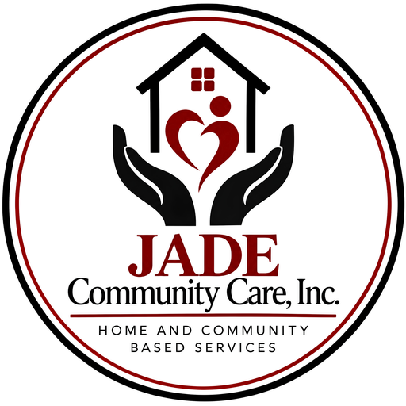

Texas HHSC-Contracted HCS Provider
Every person deserves a home, and a life they choose.
Jade Community Care supports adults with intellectual and developmental disabilities across Fort Bend County, Greater Houston, and the surrounding areas — in our group homes, in host family homes, in their own homes, and in our day program. We have been doing it since 2020, one person at a time.
- Serving Texas families since 2020
- 24-hour residential support
- Licensed day habilitation program
- Registered-nurse oversight
- Person-directed planning

What We Do
Support that fits the person, not the other way around.
Every person we serve has their own plan, their own routine, and their own goals. Our job is to build the support around that — whether someone needs help a few hours a week or around the clock.
HCS Residential
Group homes of three to four people, host home and companion care placements, and supported living in a person's own home or with family.
The HCS programISS / Day Habilitation
Individualized Skills and Socialization — what most families still call day hab. A Texas HHSC-licensed program, delivered on-site, out in the community, and in the home.
Our ISS programNursing & Clinical
Registered-nurse oversight, behavioral support, respite, and coordination of the therapies and adaptive equipment written into a person's plan of care.
Full service listWhy Families Choose Jade
Small homes. Familiar faces. Real oversight.
Large providers move people between houses and shuffle staff to fill shifts. We do not work that way. Our homes are small on purpose, our staff stay with the people they know, and a registered nurse is involved in care from the first day.
Families tell us the difference is simple: they can call and reach someone who actually knows their family member by name.
- Three- and four-person group homesNever an institutional setting
- Carefully matched host home placementsScreened, trained, and monitored families
- Consistent staffingThe same people, not a rotating agency roster
- Nurse-led health monitoringMedication oversight and change-in-condition tracking
- Person-directed plans reviewed regularlyThe person and their family lead the meeting
Getting Started
Three steps to services
If you are new to the HCS waiver, the process can feel opaque. Here is the short version — and we are happy to walk you through it on the phone.
-
Get on the HCS interest list
Call your Local Intellectual and Developmental Disability Authority (LIDDA). For Fort Bend County that is still Texana Center, which continues as the local authority even though it no longer provides waiver services itself. There is no cost to be added, and the earlier a name goes on the list, the better.
-
Choose Jade as your provider
When a slot is offered, the person and their family choose which HCS provider will deliver services. You can name Jade Community Care at that point, or transfer to us later — you are allowed to change providers.
-
Build the plan together
We meet with the person, the family, and the service coordinator to write a person-directed plan: where they will live, what support they need, and what they want to work toward this year.
Already enrolled with another provider?
You have the right to transfer. Call us at (281) 342-1995 and we will explain exactly what the transfer involves — there is no pressure and no cost to ask.
We are hiring.
Nurses, direct care staff, and day program staff. If you want work that matters and a team that backs you up, we would like to meet you. Full-time, part-time, and overnight shifts across our Richmond-area homes and our day program.